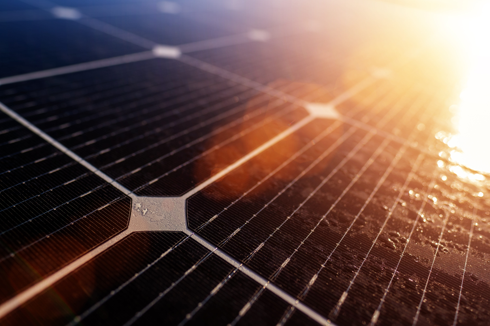
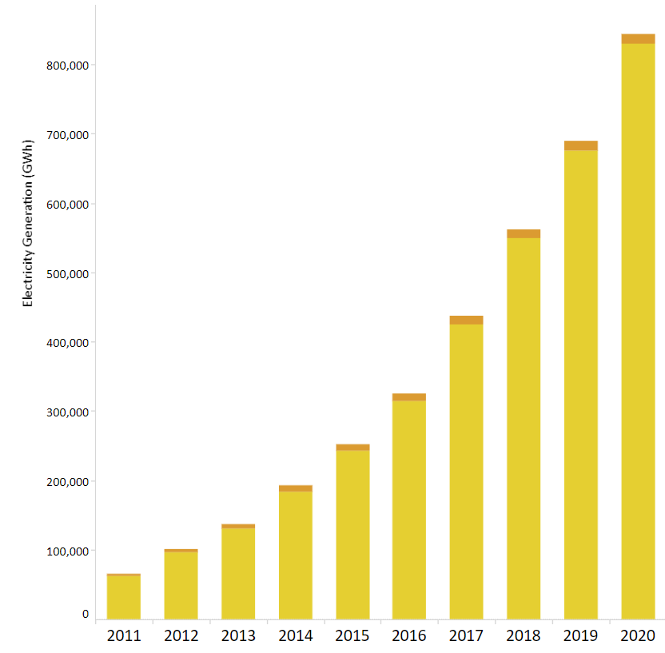

Solar Energy
Solar energy is the most abundant of all energy resources and can even be harnessed in cloudy weather. The rate at which solar energy is intercepted by the Earth is about 10,000 times greater than the rate at which humankind consumes energy.
The cost of manufacturing solar panels has plummeted dramatically in the last decade, making them not only affordable but often the cheapest form of electricity. Solar panels have a lifespan of roughly 30 years, and come in variety of shades depending on the type of material used in manufacturing.
Solar technologies can deliver heat, cooling, natural lighting, electricity, and fuels for a host of applications. Solar technologies convert sunlight into electrical energy either through photovoltaic panels or through mirrors that concentrate solar radiation.
TThe cost of manufacturing solar panels has plummeted dramatically in the last decade, making them not only affordable but often the cheapest form of electricity. Solar panels have a lifespan of roughly 30 years, and come in variety of shades depending on the type of material used in manufacturing.

Social Impacts of Solar Energy
Job Creation
When cities or companies decide to build and operate solar energy facilities, the projects often help to create numerous jobs. For instance, workers are needed to plan the project, develop and implement the project, build the solar energy plant, manage the equipment and operate the facility. Thus, many new jobs can be fulfilled by workers as a result of a city or state using solar energy facilities to generate electricity for the area, and this would in turn help decrease the unemployment rate of the given area.
Health
Generating energy from solar panels emits very little pollution into the air, and thus solar energy is a much cleaner source of energy than the burning of fossil fuels. Cities or areas that decide to use solar energy to power the buildings would thus enjoy a cleaner quality of air in the region, which in turn can make the citizens and workers in the area more healthy. Furthermore, studies indicate that burning fossil fuels helps facilitate global warming.

Solar Energy for Electricity Generation
Solar power is the conversion of energy from sunlight into electricity, either directly using
photovoltaics (PV) or indirectly using concentrated solar power. Photovoltaic cells convert light into
an electric current using the photovoltaic effect.Concentrated solar power systems use lenses or
mirrors and solar tracking systems to focus a large area of sunlight to a hot spot, often to drive a
steam turbine.
Photovoltaic technology helps to mitigate climate change because it emits much less carbon dioxide than
fossil fuels. Solar PV has specific advantages as an energy source: once installed, its operation
generates no pollution and no greenhouse gas emissions, it shows scalability in respect of power needs
and silicon has large availability in the Earth's crust, although other materials required in PV system
manufacture such as silver may constrain further growth in the technology. Other major constraints
identified are competition for land use.The use of PV as a main source requires energy storage
systems or global distribution by high-voltage direct current power lines causing additional costs, and
also has a number of other specific disadvantages such as variable power generation which have to be
balanced. Production and installation does cause some pollution and greenhouse gas emissions, though
only a fraction of the emissions caused by fossil fuels.
Usage Trends
